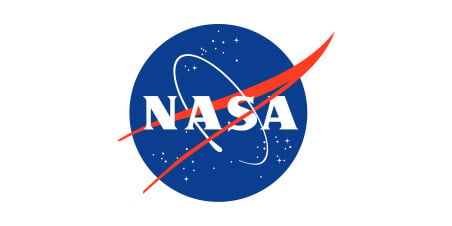
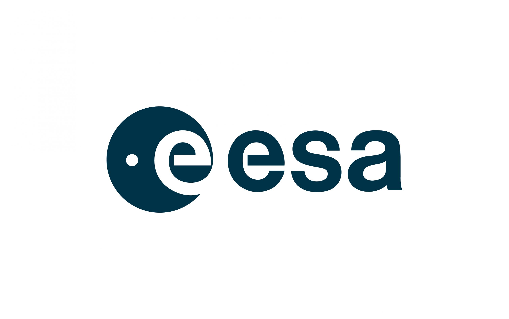

Companies
Lets Explore all the companies and space agencies



NASA(National Aeronautics and Space Administration)
Founded in 1958, NASA is the leading U.S. agency for space exploration, responsible for missions like the Apollo Moon landings, the Space Shuttle program, and the Curiosity rover on Mars. Today, its Artemis program aims to return humans to the Moon as a stepping stone for Mars exploration. Beyond human spaceflight, NASA studies planets, stars, and galaxies using missions like Juno (Jupiter) and the James Webb Space Telescope. It also monitors Earth's climate using satellites and collaborates with private companies like SpaceX to advance reusable spacecraft technology. NASA supports scientific research on the International Space Station (ISS) and partners with global agencies to expand space exploration. Its long-term vision includes deep-space missions to Mars and beyond.
ESA (European Space Agency)
Established in 1975, ESA unites 23 European nations in space research, developing projects in Earth observation, planetary exploration, and satellite communication. Its Copernicus program provides environmental monitoring, while Mars Express studies the Red Planet. ESA contributed to historic missions like Rosetta, which landed a probe on a comet, and co-developed the James Webb Space Telescope. It is working on ExoMars, aiming to search for life on Mars. ESA astronauts work aboard the International Space Station (ISS) and its Columbus module, conducting scientific research. Future plans include lunar exploration and collaboration on the Lunar Gateway for deep-space missions.